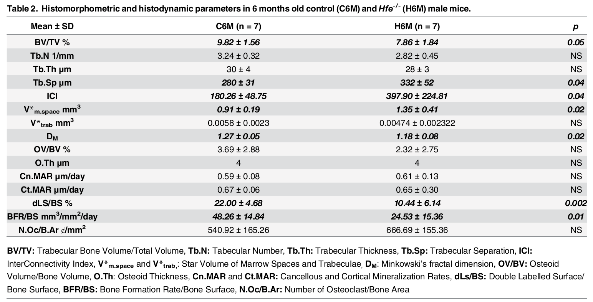

../../cm-ucl/corpus-oa-pmr-v02/10.1371_journal.pone.0148292/tables/table1/table.png
|
| Mean ± SD |
C6M (n = 7) |
H6M (n = 7) |
p |
| Final Body Weight g |
32.71 ± 1.35 |
33.31 ± 2.37 |
NS |
| HIC μmol iron/g liver |
4.93 ± 1.59 |
18 ± 4.08 |
0.004 |
| FeL.S/BS % |
0 |
37.36 ± 23.64 |
0.006 |
../../cm-ucl/corpus-oa-pmr-v02/10.1371_journal.pone.0148292/tables/table1/table.svg.html
|
|

../../cm-ucl/corpus-oa-pmr-v02/10.1371_journal.pone.0148292/tables/table2/table.png
|
| Mean ± SD |
C6M (n = 7) |
H6M (n = 7) |
p |
| BV/TV % |
9.82 ± 1.56 |
7.86 ± 1.84 |
0.05 |
| Tb.N 1/mm |
3.24 ± 0.32 |
2.82 ± 0.45 |
NS |
| Tb.Th μm |
30 ± 4 |
28 ± 3 |
NS |
| Tb.Sp μm |
280 ± 31 |
332 ± 52 |
0.04 |
| ICI |
180.26 ± 48.75 |
397.90 ± 224.81 |
0.04 |
| V* _{m.space} |
|
|
|
| mm^{3} |
0.91 ± 0.19 |
1.35 ± 0.41 |
0.02 |
| V*_{trab} |
|
|
|
| mm^{3} |
0.0058 ± 0.0023 |
0.00474 ± 0.002322 |
NS |
| D _{M} |
1.27 ± 0.05 |
1.18 ± 0.08 |
0.02 |
| OV/BV % |
3.69 ± 2.88 |
2.32 ± 2.75 |
NS |
| O.Th μm |
4 |
4 |
NS |
| Cn.MAR μm/day |
0.59 ± 0.08 |
0.61 ± 0.13 |
NS |
| Ct.MAR μm/day |
0.67 ± 0.06 |
0.65 ± 0.30 |
NS |
| dLS/BS % |
22.00 ± 4.68 |
10.44 ± 6.14 |
0.002 |
| BFR/BS mm /mm /day^{3} ^{2} |
48.26 ± 14.84 |
24.53 ± 15.36 |
0.01 |
| N.Oc/B.Ar ȼ/mm^{2} |
540.92 ± 165.26 |
666.69 ± 155.36 |
NS |
../../cm-ucl/corpus-oa-pmr-v02/10.1371_journal.pone.0148292/tables/table2/table.svg.html
|